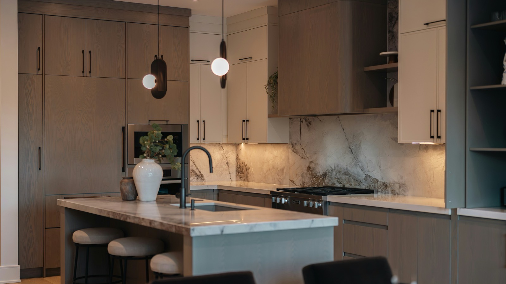
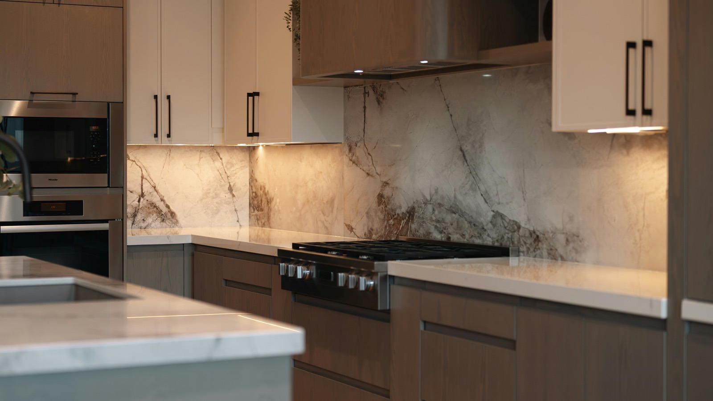
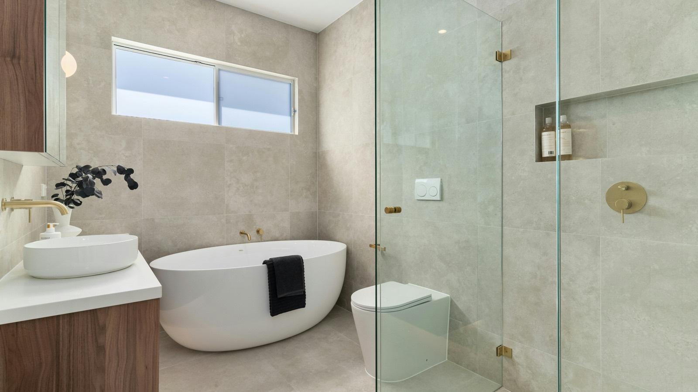
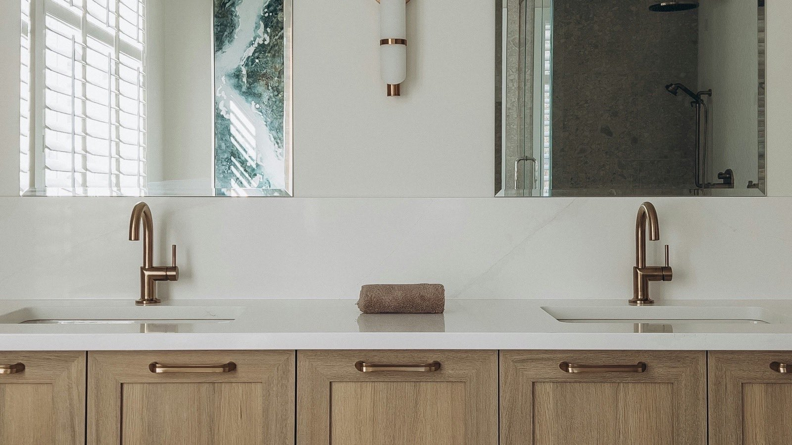
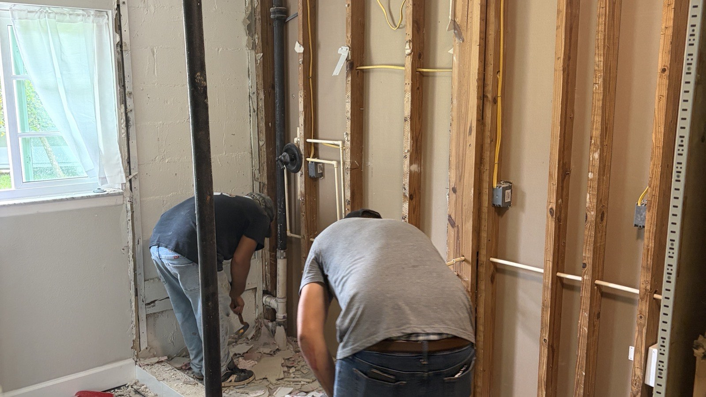

I spent 30 years in renovation before I got my real estate license, and I still hold a Florida Certified General Contractor license. So when I look at a kitchen or a bathroom, I see two things at once: what it costs to build, and what it does to the value of the house. This page is both of those lenses at the same time. Not a mood board. A builder's honest take on what holds up in Florida and what pays you back when you sell.
Kitchens
The Layout Question
Open concept is still what most buyers ask for in Pinellas County, but it is not free. Taking out a wall between a kitchen and living room often means dealing with load, electrical reroutes, and flooring patches, and on a slab home the plumbing does not move without cutting concrete. If your house already has a workable open plan, lean into it. If it does not, a widened cased opening gets you most of the visual benefit at a fraction of the structural cost.
Islands earn their keep when you have 42 inches of clearance on all working sides. Less than that and you built an obstacle, not a feature.
Cabinets
In Florida humidity, box construction matters more than door style. Plywood boxes handle moisture swings better than particleboard over the long haul. Painted shaker fronts remain the safest resale choice in this market, and if you want personality, put the color on the island and keep the perimeter neutral. Full-height uppers to the ceiling read custom and add real storage.
Countertops
Quartz dominates for a reason: no sealing, consistent slabs, survives renters and teenagers alike. Granite still works and often costs less right now. Butcher block looks great on day one and needs a level of maintenance most households will not actually do, especially around a sink in this climate. If you love it, use it on an island away from water.
Kitchen Flooring
Near the coast, on slab, my order of preference: porcelain tile, then quality luxury vinyl plank, then engineered wood. Solid hardwood on a coastal slab is asking for cupping. Large-format porcelain in a wood look gets you the warmth without the risk, and it shrugs off standing water, which matters more here than anyone wants to think about.

For what is trending this year specifically, I broke that down in my 2026 kitchen and bath trends post.
Bathrooms
Showers and Tubs
Walk-in showers with frameless glass are the single most requested bath feature I hear from buyers. That said, keep at least one tub in the house. Families with young kids filter for it, and removing your last tub narrows your buyer pool on resale. The move: convert the primary bath to a big walk-in shower, keep the hall bath tub.

Tile
Porcelain over ceramic in wet areas if the budget allows. Large-format tile on shower walls means fewer grout lines, which is both the modern look and less maintenance. Save the intricate mosaic for the niche or a single accent, not the whole floor. And spend on the waterproofing behind the tile before you spend on the tile itself. Nobody sees the membrane, but it is the difference between a 20-year shower and a 7-year one.
Ventilation Is Not Optional Here
This is the most skipped line item in Florida bathrooms and the one I would never skip. An undersized or missing exhaust fan in this humidity means mold, peeling paint, and swollen trim, and mold remediation history follows a house. Size the fan to the room, vent it to the exterior, not the attic, and put it on a timer switch so it actually runs long enough to clear the air.
Vanities
Furniture-style vanities with real drawer storage beat builder-grade cabinet boxes. Wall-hung floats look sharp in modern spaces and make small baths feel bigger. Double sinks matter in a primary bath for resale, but if the space only fits one sink comfortably, one generous sink beats two cramped ones.

The Florida Part
Building Where We Build
Salt air, humidity, and flood zones change the math on material choices. Stainless hardware grades matter near the beach. Solid wood exterior doors move with the seasons here. And if your home took water in Helene or Milton and was rebuilt, your documentation is now part of your home's story. Permits, receipts, and dates are going to get asked about at appraisal and at sale, especially under the new appraisal standards.

I wrote about exactly what appraisers will be asking for starting this November.
One more thing worth knowing if you are in a flood zone: substantial improvement rules can cap how much renovation you can do without triggering elevation requirements. It catches people off guard mid-project. Ask about it before you design, not after.
Renovating With Resale in Mind
The Two-Lens Rule
Every renovation decision looks different depending on how long you are staying. Ten more years? Build what you love. Selling within five? Then every dollar should be interrogated: does this add value, or does it just add cost? Mid-range kitchen and bath refreshes consistently return more of their cost than high-end gut jobs. Neutral finishes outsell bold ones. And condition beats style: buyers forgive dated before they forgive broken.
If you are planning a renovation and there is any chance you sell in the next few years, talk to me before you finalize the plan. I will tell you straight which parts of your project the market will pay you back for, and I can pull the permit history on your home so you know exactly where your documentation stands. No cost, no obligation. Fourth-generation St. Pete, and I answer my phone.